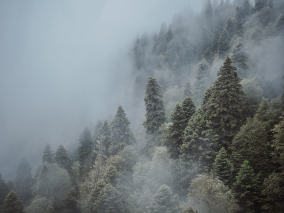
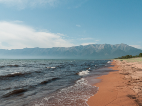
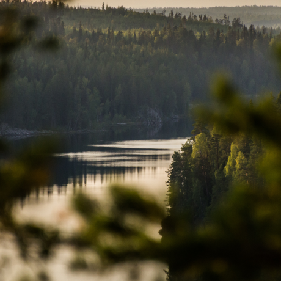

Путешествия по России
Настоящая страна не в выпусках новостей, а здесь.
ваша полка — верхняя
Чего мы там не видели?
По опросам ВЦИОМ, 95% россиян мечтают куда-нибудь поехать, но
только 36% планируют провести отпуск в родной стране. Мол, чего
мы тут, дома, не видели? На самом деле, Россия — это целая
вселенная с ласковым морем юга, густыми лесами Саян и суровыми
льдами плато Путорана. А ещё увидеть все эти красоты можно без
миллионов на счету, загранпаспорта и многочасовых перелетов.
Как, например, Вера Башмакова — смелая молодая мама, которая
взяла в охапку троих детей, усадила их в свою «Ладу» и проехала
20 тысяч километров по родной стране. Мы выбрали и описали
некоторые интересные места, достойные вашего отпуска.
- Часовых поясов 11
- Объектов природного наследия ЮНЕСКО 12
- Объектов культурного наследия ЮНЕСКО 16
- Природных заповедников 105
- Аэропортов 241



Куршская коса
URL
park-kosa.ru

Здесь, посреди лесов и песчаных дюн, вы сможете увидеть
два водных горизонта — спокойного Куршского залива с одной
стороны и подёрнутого рябью волн Балтийского моря с
другой. Уникальная природная зона на краю российского
анклава.
На этом Калининградская область не заканчивается. Для
путешественника и исследователя там же по соседству —
самая западная точка России, Балтийская коса, — и немецкое
наследие россыпи небольших приморских городов. Атмосфера
здешних мест исключает суету, окуная в спокойствие природы
и запах стального, прохладного моря.
Кольский
Почти весь полуостров находится за Полярным кругом.
Саамская тундра, от которой на юг — тайга, а на север —
Ледовитый океан, прикидывающийся Баренцевым морем.
Возможно, вы смотрели Звягинцева и даже слышали историю
арктического фестиваля в Териберке. Возможно, слово
«Хибины» не осталось под снегом школьных воспоминаний об
уроках географии. Возможно, вы не интересовались
пронизывающей земную кору сверхглубокой скважиной, а от
апатитов вас давно накрывает апатия. Но ваша мечта увидеть
северное сияние начинает сбываться с билетом в Мурманск.
Алтай
URL
Facebook
Алтай — одно из красивейших мест в России. В первую
очередь из-за гор: если ехать вдоль хребта, вы увидите
склоны, усыпанные соснами, горные реки и озёра. А если вы
откроете в автомобиле окна, сможете познакомиться с
невидимым чудом здешних мест — горным воздухом.
Климат на Алтае умеренный, поэтому ехать сюда лучше всего
летом. Так вы увидите всё разнообразие местной флоры и
фауны. По лесам Алтая бродят лоси, над хребтами летают
орлы, а на равнинах пасутся косули. И знаменитые манулы —
тоже обитатели Алтайского края.
Зимний Байкал
Всем известен Байкал как крупнейшее озеро в мире. Многие
также знают, что это самый большой источник пресной воды и
одно из красивейших мест в России.
Конечно, это всё так. Но Байкал ещё идеальное место для
соревнований по скийорингу. Это такой вид спорта, когда
лыжник привязывает себя к мотоциклу, и тандем старается
развить как можно бóльшую скорость на льду. В марте 2019
года на фестивале «Байкальская миля» был поставлен мировой
рекорд — 197.011 км/ч.
Карелия

Сибирь заканчивается не на Урале, а в Карелии: образующая
тайгу сибирская лиственница не растёт западнее Водлозера.
Зато здесь она вымахивает на 30 метров — леса карельских
национальных парков из-за непроходимых болот никогда не
знали топора. Некоторым соснам уже больше чем
полтысячелетия. Прикоснитесь к живому существу, видевшему
солнце раньше, чем увидал его Иван Грозный. В девственном
лесу на сотню километров не встретишь тропы. А на редких
тропинках деревья в паре метров от земли помечены
медвежьими когтями. Чтобы все знали, кто тут хозяин.